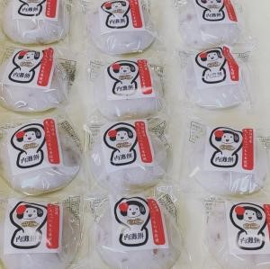

画像 1
内灘餅
内灘餅

01PEANUT MOCHI
砂丘育ちの落花生を、たっぷり。内灘餅
やさしい甘さ × 風味豊かな食感砂丘地で穫れる落花生をふんだんに入れた、優しい甘さの「ピーナッツ餅」は、内灘町の西荒屋地区で昔から子どもたちに愛されてきたおやつです。
昔ながらの味を絶やさないよう、西荒屋地区の地域おこし団体「西荒屋営農促進会」のメンバーが、「内灘餅」として、ひとつひとつ丁寧に手作業で製造・販売しています。
100%ピーナッツも餅米も Made in 内灘
手仕事地域に受け継がれてきた味